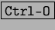

Next: Guardar, guardar como:
Up: El documento:
Previous: Como crear un nuevo
Índice General
Con StarWriter existe la posibilidad de trabajar con documentos de formatos
muy diferentes, como pueden ser los documentos de Microsoft Word, html, TXT,
RTF, Winword, etc. Para abrir un documento existente se pulsa en [Archivo]
y se elige [Abrir] y aparecerá un cuadro de dialogo en el que aparece la
ubicación de los archivos en nuestro ordenador, se elige la ruta correcta y
el nombre del archivo y se pulsa abrir o utilizamos las teclas rápidas .
Proyecto Cursos - LuCAS - http://lucas.hispalinux.es/htmls/cursos.html